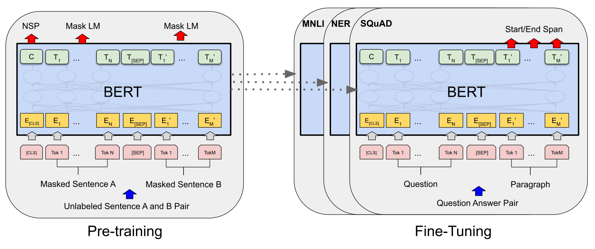
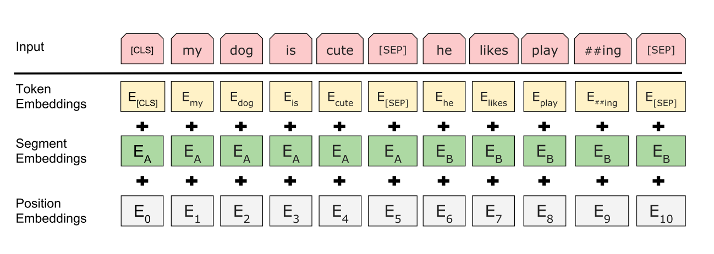

BERT
简介
今天来看读的是大名鼎鼎的 BERT，出自论文 Google 团队 2018 年的论文《BERT: Pre-training of Deep Bidirectional Transformers for Language Understanding》。BERT（Bidirectional Encoder Representations from Transformers）可谓是 NLP 历史上划时代的预训练模型，在 11 项自然语言处理任务上都取得了 state-of-the-art。并且，Google 将 BERT 的代码与预训练模型全部开源，便于大家使用。
预训练（语言）模型
预训练语言模型是自然语言处理中的重要部分，与计算机视觉中的预训练模型类似，也是为了从特定的下游任务中脱离出来，在大量数据上预训练可以解决通用任务的模型。这样以来，下流任务可以根据自己的任务特点进行微调，而不需要从头训练。这样做的好处非常明显：
- 训练时间更短
- 数据要求更少
在计算机视觉中，预训练模型例如 ImageNet 首先得到广泛应用，利用 ImageNet，你可以很快地构造一个特定任务的识别模型，而不需要从头训练，重复捕捉像物体边界等信息。在自然语言处理中，预训练模型应用就没有那么广泛。一个主要的原因就是多义词，例如 “苹果” 既可以代表电脑品牌、也可以代表水果，其具体的含义要根据具体的上下文才能推断出来。而像 word2vec/glove 这样的静态词向量算法，词向量一经训练得到就固定了，所以不能建模一词多义的现象。ELMO 于 2018 年 3 月提出，在双向 LSTM 上预训练语言模型，解决了静态词向量存在的问题，然而还没来得及大展拳脚，就被 2018 年 10 月的 BERT 拍死在了沙滩上。。。
预训练模型可以简单分为两类：
- 基于特征的预训练模型，指利用语言模型的中间结果，作为额外的特征，引入到下游任务中。典型的就是 ELMO。特点：模型参数是固定的。
- 基于微调的预训练模型，指在语言模型的基础上，加入少量的特定任务参数（例如分类任务，加一层 softmax），再在任务数据上微调模型，典型的就是 GPT。特点：模型参数需要微调。
在 BERT 之前的预训练模型，例如 ELMO 与 GPT，存在的一个重要问题是它们只从单向建模了序列。虽然 ELMO 是使用的双向 LSTM，也只是把双向的隐藏状态进行了拼接，双向的特征信息也没有很好地进行融合。形式化的来说，标准的语言模型就是单向的，当前词的选择只依赖于先前词，例如从左到右方向： \[ P_{l2r}(x_1,x_2,\dots,x_n)=\prod_{t=1}^nP(x_t|x_{<t}) \]
掩码语言模型（masked language model，MLM）
考虑到标准的语言模型所存在的问题，BERT 提出了一种掩码语言模型的任务，具体做法为：随机遮挡输入中的部分单词，目标是仅根据单词的上下文预测当前位置本来的单词（即遮掩前的单词）。与从左到右的语言模型不同，掩码语言模型能够融合单词的左右上下文。形式化而言，对于 \(x_t\) 的概率分布，掩码语言模型计算的是 \(P(x_t|x_{<t},x_{>t})\)，标准的语言模型计算的是 \(P(x_t|x_{<t})\)。但值得注意的是，掩码语言模型并不是传统的语言模型，一些论文中可能存在二者混用的情况。语言模型的定义可以看我之前的博客 语言模型 | 一隅。
个人认为掩码语言模型的思路与 cbow 的思想是有些像的，根据一个单词的上下文来预测这个词。
BERT
BERT 主要分为两个阶段：预训练和微调。两者流程如下所示：

可以看到，除了输出层，预训练和微调的架构基本上是完全一致的。预训练的权重将会作为下流微调任务的参数的初始权重。在序列中，BERT 加入了两个特殊标记：
- [CLS]：添加于序列起始位置，作为整个序列的表示，可以用于分类任务。
- [SEP]：当输入为一对序列的时候（例如问答任务，一问一答），添加于两序列之中，作为分隔符。
BERT 由若干个 Transformer 编码器（注意只有编码器）组成，在论文中，作者提出了两种规模的 BERT：
- \(BERT_{BASE}\)：由 12 个 Transformer 编码器堆叠而成，隐节点大小为 768，自注意力机制有 12 个头，约 110M 参数。
- \(BERT_{LARGE}\)：由 24 个 Transformer 编码器堆叠而成，隐节点大小为 1024，自注意力机制有 16 个头，约 340M 参数。
输入输出表征
在输入表征上，BERT 使用了 WordPiece 的词嵌入，词表大小为 30000。WordPiece 是一种子词模型，token 粒度介于整个单词与字符之间，例如会将 “working” 这个单词拆分为 “work”、“ing” 两个 token 存储在词表中，"ing" 又可以与其他的动词结合，这样就可以用更小的词表存储更多的单词，也没有损失太多的语义信息。
BERT 的输入既可以是单个序列，也可以是一对序列（例如问答场景）。应用于一对序列时，需要插入 [SEP] 分隔符，并且要使用段嵌入向量。对于输入的每个 token，它的输入表征为以下三个向量的和：
- 符号向量（token embedding），也就是我们传统意义上所说的词向量。
- 段向量（segement embedding），用以区分一对序列中的两个不同的序列。
- 位置向量（position embedding），用以编码位置信息。

值得注意的是，以上三种词向量全部通过学习得到，这与 Transformer 不同。Transformer 中的位置向量是通过三角函数计算得到，而 BERT 是通过学习得到的。就这一点作者似乎没有进行解释，而 Transformer 的作者在论文中实验结果是，学习得到与使用三角函数的位置向量效果相近，而三角函数更易扩展。一种说法是 BERT 使用的语料更大，可能可以学习到更好的位置向量。
预训练
掩码语言模型
在训练时，按一定比例（实验中为 15%）随机屏蔽输入序列中的部分单词（使用 [MASK] 替换），然后预测被屏蔽掉的单词，而不是重建整个输入序列。这个过程与完形填空类似，想象一个句子中有几个单词空缺，掩码语言模型的目标就是根据上下文成功预测空缺的单词。这与语言模型的训练方式还是有较大差别的。
上述方式虽然听上去很合理，但有一个问题，在下流任务的微调阶段，并不会出现 [MASK] 标记，这一定程度上导致了预训练与微调间的不匹配。为了解决这种情况，BERT 并不总是使用 [MASK] 替换掉需要屏蔽的单词，而是按照概率执行对应操作：
- 80% 替换为 [MASK]
- 10% 替换为随机其他单词
- 10% 保持不变
之后，被屏蔽掉的单词会被用以预测原本的单词，换而言之，预测概率变为 \(P(x_t|x_{<t},x_{mask},x_{>t})\)。这样能够缓解预训练与微调间的不匹配情况。直观来看，BERT 会参考被屏蔽掉单词，因为它有 10% 的概率就是真实的单词，但也不会完全依赖这个单词，因为 10% 的概率还是很小的。
下句预测（Next Sentence Prediction，NSP）
考虑到 NLP 中的很多任务例如问答、自然语言推理都基于句子间关系的理解，而这种句子间的关系不能被语言模型捕获，因此 BERT 提出了一个名为下句预测的预训练任务。顾名思义，这个任务的目标是判断两个句子是否构成上下句的关系。这个任务的数据非常容易获得，在大规模语料上获取连续的两句话，并以 50% 的概率替换真实的下句话，即可得到正负样本分布均匀的数据集。
微调
在微调时，只需要将特定任务的输入输出放到 BERT 中，微调所有参数，输入的形式可以是单个句子或句子对，可以应用的任务举例如下：
- 单个句子：文本分类、序列标注、情绪分析（利用 [CLS] 符号）
- 句子对：释义、问答等任务
对于句子对，传统的模型往往将其拆分分开处理，而 BERT 将句子对同时投喂到模型中，能够更好地捕获句子间关系。
实验
实验部分主要介绍了 BERT 微调之后是怎么横扫涵盖通用语言评理解评估等十一项任务的，基线模型有 biLSTM+elmo，GPT 等，这里就不多介绍了。有兴趣的可以去看看原文。
消融实验
消融实验更像是控制变量法，对于模型中的多个改进，控制变量来分析哪个改进对于效果的提升是最大的，这就是消融实验。消融实验细节可以看原文，我在这里总结一下消融实验的结论：
预训练任务
- 去除下句预测后的 BERT 模型在 QNLI, MNLI 等涉及句子对的任务上的性能损失严重，证明下句预测对于句子间关系的捕获还是很有作用的。
- 仅使用从左到右的语言模型训练的 BERT 比使用掩码语言模型训练得到的 BERT 效果要差，证明掩码语言模型训练方式的有效性。
模型大小
- 参数越多，各项任务上的效果越好，非常的真实。
训练步数
- BERT 真的需要在 128,000 字符 /batch 上训练 1,000,000 步才能达到这么好的效果，训练一百万步比五十万步的 BERT 在 MNLI 获得了 1% 的提升。
- 掩码语言模型的收敛慢于自左向右的语言模型，但就精度而言，掩码语言模型几乎在训练之初就强于语言模型。
基于特征的方法
- BERT 对基于特征和微调的方法都是有效的。
结论
论文提出了一种全新的预训练任务 -- 掩码语言模型，并在该任务和下句预测任务上预训练了一个基于双向 Transformer 的深层模型 BERT。在十一项 NLP 任务上的微调实验结果表明，BERT 的效果优于现有的预训练模型。
BERT 的论文断断续续读了几天，读下来感觉醍醐灌顶，很多之前模棱两可的东西都真正了解了。果然读论文还是要读原文，别人的博客只是参考。后面有空了再读一读 BERT 的源码，又想去读 GPT 的论文，时间也太少了。